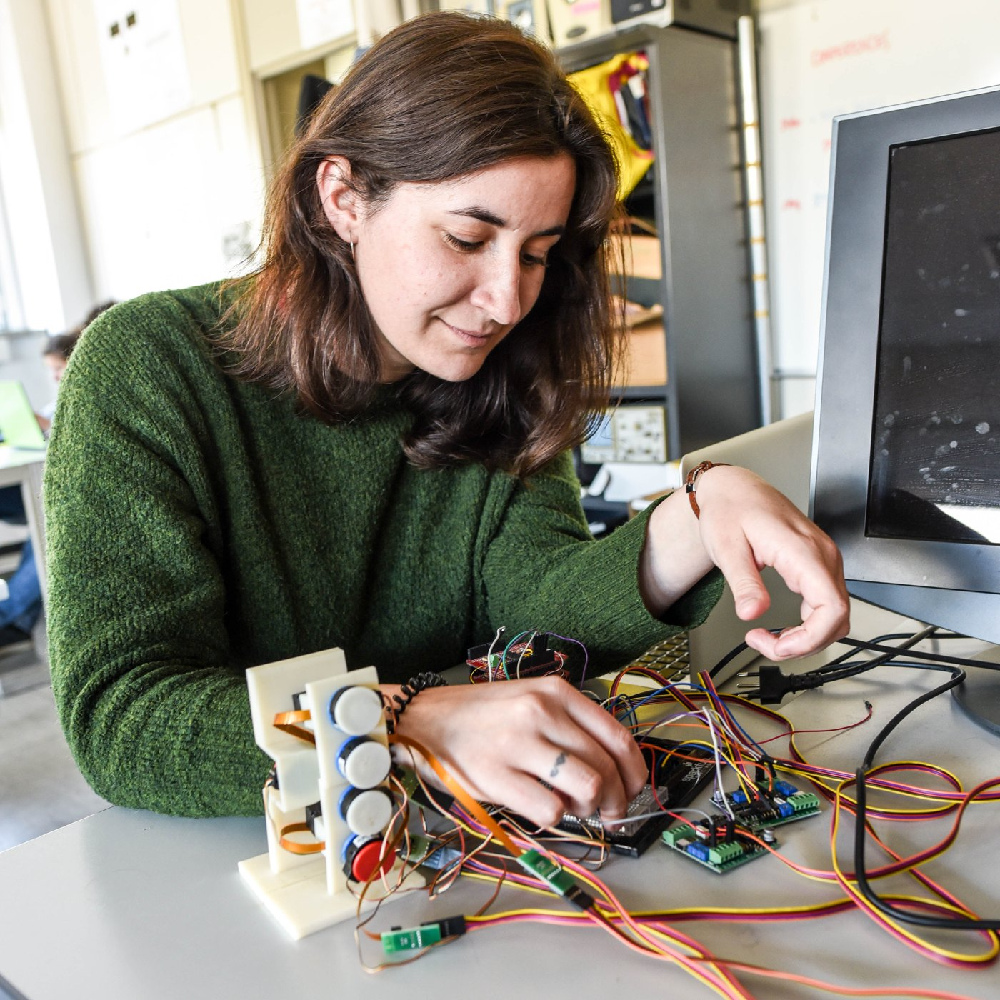

The work
Her project involved a neuroprosthetic device developed to test finger dexterity in people who had experienced a stroke. The work challenged her to develop electronics and software skills, connecting engineering concepts to a rehabilitation problem.
The perspective
The exchange also meant learning to collaborate across a time difference and adapting to a different university culture. Campus life and the experience of building something tangible became memorable parts of her education. At the time of the interview, she was considering doctoral study as her next step.
“For my master’s, I spent six months in Marquette University, Milwaukee.”
